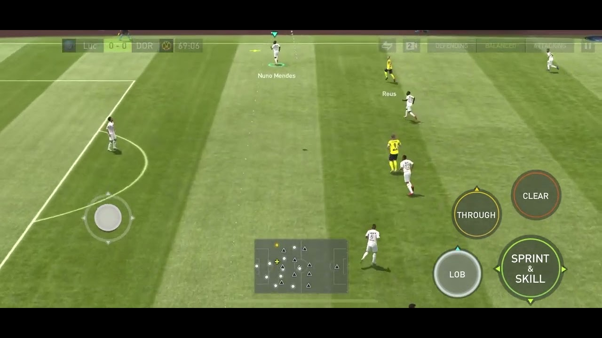

|  |
| Este es uno de mis videojuegos
favoritos de la tablet, este es el fifa mobile, aquí puedes jugar con
tu propio equipo de futbol tanto futbolistas actuales como iconos o
heroes. El juego es bastante sencillo, debes crear tu propio equipo de ultimate team y juegas contra la IA o contra gente de forma online, también se puede hacer juegos de habilidades para entrenar a tu equipo. Además para conseguir futbolistas es mediante monedas en la tienda o en SBC que debes hacer plantillas como un jugador bastante bueno o un sobre de cartas donde te pueden tocar buenos o malos futbolistas dependiendo de tu suerte. En la foto enseño mi priemra vez que jugué que fué hasta en beta que por eso estaba en inglés que me costaba un poco entenderlo. |